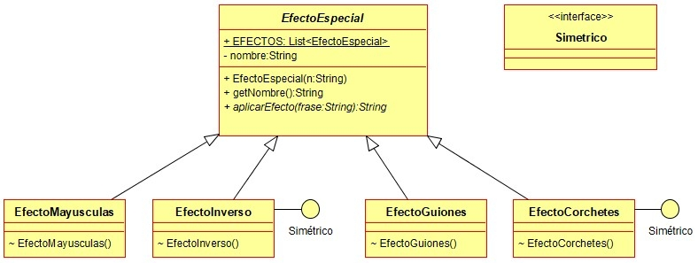

Ejercicio 31 : Crea un paquete llamado efectos.clases y programa en él el diagrama de clases Efectos especiales.
| Clase | Nombre del efecto | Lo que hace el efecto | Ejemplo |
|---|---|---|---|
| EfectoMayúsculas | Pasar a mayúsculas | Pasa a mayúsculas la frase. | “a jugar” -> “A JUGAR” |
| EfectoInverso | Inversión de letras | Devuelve la frase al revés. | “a jugar” -> “raguj a” |
| EfectoGuiones | Separador de guiones | Cambia los espacios por guiones bajos. | “a jugar” -> “a_jugar” |
| EfectoCorchetes | Envoltura de corchetes | Encierra la frase entre [ y ], pero si el texto empieza y termina por ellos, los elimina. |
“a jugar” -> “[a jugar]” “[a jugar]” -> “a jugar” |